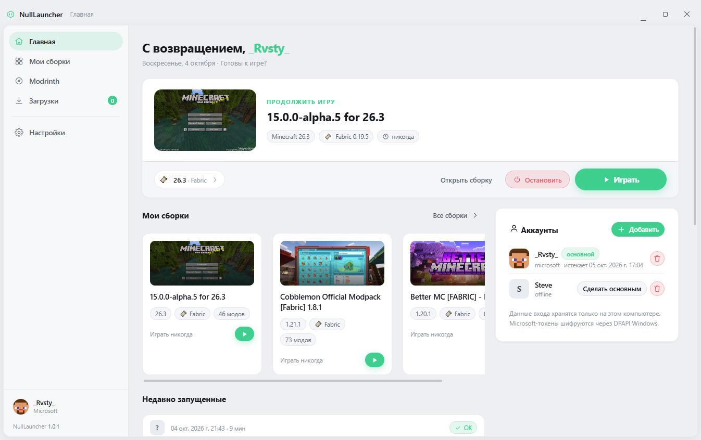

XPRODC
Независимый проект · открытый исходный код
Лаунчер Minecraft
NullLauncher
Сборки, моды и модпаки
в одном месте.
Теперь и на Android.
Windows 10/11
Android · ранний доступ

nulllaucnher.xprodc.site· Windows и Android
XPRODC / NULL LAUNCHER